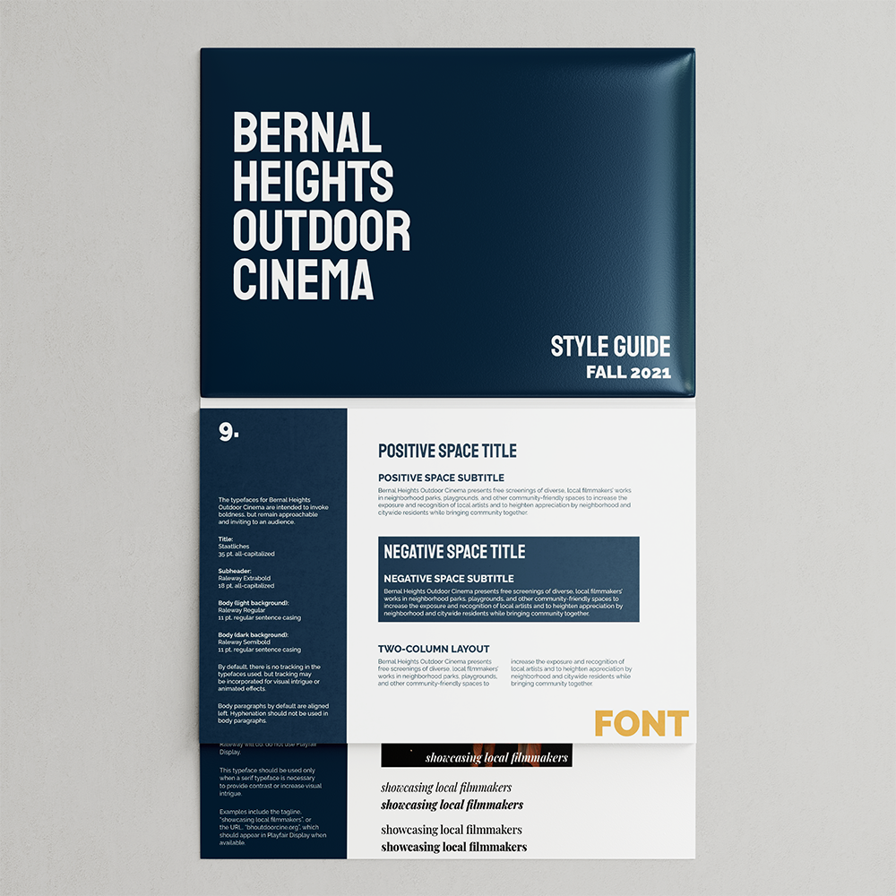
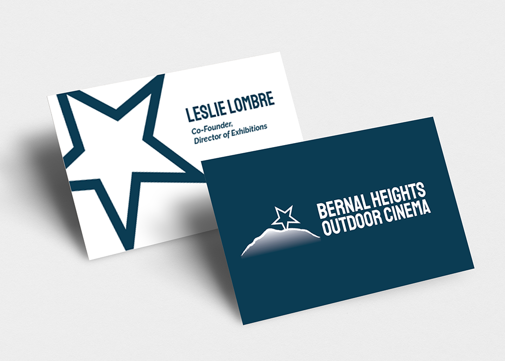
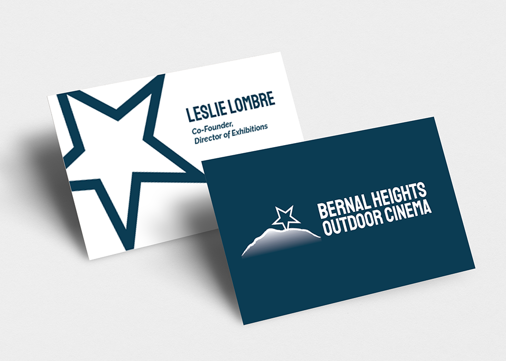

This project started as a website redesign and quickly developed into a full rebrand for this San Francisco-based film festival nonprofit.
By speaking with supervisors, I investigated the identity of Bernal Heights Outdoor Cinema and created a new visual identity to represent their mission and vision.
The website design was a complete overhaul using a new Wordpress template. Major changes involved the reorganization of main content such as upcoming events, contact information, and sponsorship.
Visit the new website here: Bernal Heights Outdoor Cinema
 

As the final piece to compliment the redesign, I also created letterhead and business cards to support the organization's internal and external communications.